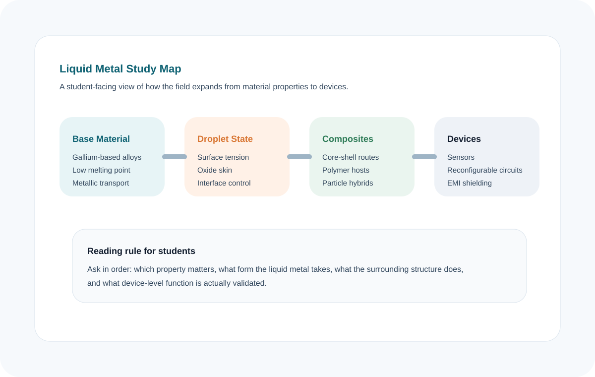

1. Why liquid metal has become a serious research field
Liquid metal attracts attention because it brings together properties that are usually separated. In most introductory materials science courses, students learn to think of metals as rigid, highly conductive solids and to think of liquids as mobile but electrically poor media. Gallium-based liquid metals force those two categories to overlap. They remain fluid at or near room temperature, but they still keep metallic electrical and thermal transport. That unusual combination is the reason the field keeps appearing in soft electronics, thermal management, reconfigurable circuits, robotics, and more recently electromagnetic shielding.
The papers used for this study page repeatedly return to the same practical point: the modern field is centered on gallium and gallium-based alloys because they are the workable alternative to mercury. Gallium, EGaIn, and Galinstan provide a realistic materials platform with low melting points, high boiling points, low vapor pressure, and strong electrical conduction. In other words, the field did not grow simply because liquid metals are visually interesting. It grew because gallium-based systems opened a usable operating window for real devices and real processing routes.
For students, this is the first conceptual anchor. Liquid metal is not one isolated niche material. It is a broader design platform for problems where compliance, conductivity, thermal transport, and geometric reconfiguration have to coexist. Once that is clear, the rest of the field becomes easier to organize.
2. Why the droplet form changes the way we think about the material
Bulk liquid metal already has unusual value, but the field expands dramatically when the material is turned into droplets. The droplet state introduces a new scale of control. At that point, the metal is no longer defined only by conductivity or melting point. It becomes an interfacial object. Surface tension, oxide formation, droplet size, mobility, and interaction with surrounding media begin to control what the material can actually do.
This is why the droplet review is so important for students. It shows that droplets are not just smaller pieces of the same material. They create new engineering possibilities. Droplets can be patterned, stabilized, coated, aligned, dispersed in matrices, and activated into networks. Their large surface-to-volume ratio makes functionalization far more consequential than it is in the bulk state. The oxide layer becomes a central actor. It can help droplets hold shape, avoid uncontrolled coalescence, and support printing or pattern retention. At the same time, that same oxide layer can hinder merging, introduce transport penalties, or complicate precise control.
Students often find the liquid-metal literature confusing because the same oxide layer is sometimes described as useful and sometimes described as a problem. The correct interpretation is that it is both. In this field, a useful property often arrives with a constraint. The job of device design is to decide when a given feature should be stabilized, suppressed, or redirected toward another function.


3. Why the field quickly moves from pure liquid metal to composite systems
Once the droplet perspective is understood, the next major transition becomes clear: pure liquid metal is rarely enough by itself. It is highly conductive and highly deformable, but that does not automatically mean it is easy to integrate into devices. It must often be confined, dispersed, activated, connected, or protected. This is the point where composites become the backbone of the field. The major reviews on composites show that the most important advances come from combining liquid metal with shells, polymers, particles, or hybrid interfaces that compensate for what the pure liquid cannot provide on its own.
In practical terms, composites answer the questions that a raw liquid cannot answer well. How do we stop uncontrolled spreading? How do we keep conductivity while stretching? How do we maintain a stable droplet population inside a soft matrix? How do we add magnetic response, catalytic activity, or electromagnetic shielding performance? How do we design a system that can be rewired or recycled instead of discarded after damage? These are not minor adjustments. They are the reason the field can move from material curiosity to serious engineering.
This is also the point where students should stop thinking of liquid metal as a singular substance and start thinking of it as a phase inside a larger architecture. In many successful systems, the most important design choice is not the alloy alone. It is the relationship between the liquid-metal phase and the surrounding structure.
4. How students should read the field from this point forward
A useful way to read the field is to ask four questions in order. First, what fundamental property is the work trying to exploit: conductivity, thermal transport, mobility, self-healing, or field responsiveness? Second, what form does the liquid metal take: bulk channel, isolated droplets, percolated network, or composite filler? Third, what problem is the surrounding material solving: encapsulation, toughness, activation, electromagnetic loss, or process compatibility? Fourth, what device-level function is being claimed, and under what operating conditions is it validated?
If students keep those four questions in view, the literature becomes much less scattered. Different papers begin to look like different answers to the same structural problem. Some emphasize interfacial control, some emphasize composite stabilization, some emphasize device reliability, and some emphasize multifunctionality such as shielding. But all of them are trying to turn a distinctive phase of matter into a controllable engineering system.
The other important lesson is that the field is moving toward more realistic and lifecycle-aware goals. Reconfigurable electronics, recyclable composites, and shielding architectures show that the research frontier is no longer just “can liquid metal conduct while soft.” The frontier is increasingly about whether a liquid-metal system can survive damage, retain function, be reconfigured for a new role, and operate in environments that matter outside a single lab demonstration.
5. Additional properties and outlook worth tracking
The handbook page focuses on the most easily comparable physical properties, but the papers repeatedly emphasize several qualitative traits that are just as important for research direction. One is chemical reactivity at the interface. Gallium-based liquid metals do not simply sit inertly in every environment; their oxide-mediated interfaces can participate in coating formation, adhesion changes, and surface-triggered functionality. Another is field responsiveness. The droplet review in particular highlights how liquid-metal systems can respond to electric, magnetic, acoustic, thermal, or chemical inputs, which is why the same materials platform can appear across sensing, actuation, and adaptive electronics.
A third property that deserves attention is practical stability. Low vapor pressure, broad liquid-state temperature windows, and relative biocompatibility compared with mercury make gallium systems more realistic for real-world translation. From a student perspective, the outlook of the field is therefore not just “better conductivity” or “more stretchability.” The broader outlook is the design of systems that are soft, reconfigurable, interface-aware, and credible under realistic use conditions. That is the lens through which the current liquid-metal field is best understood.